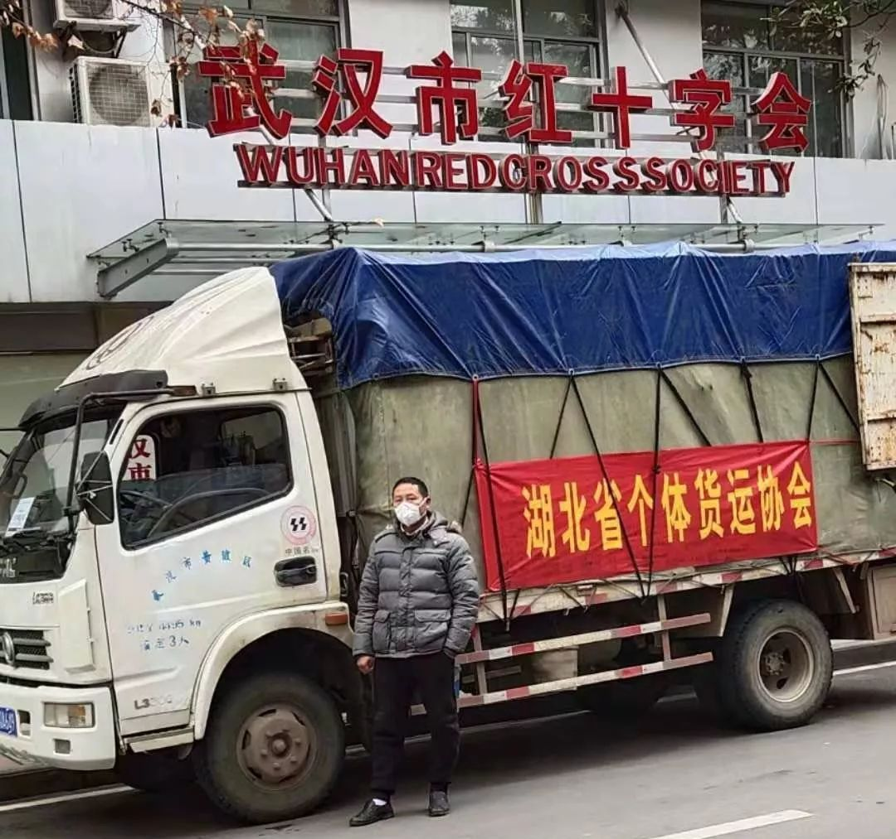
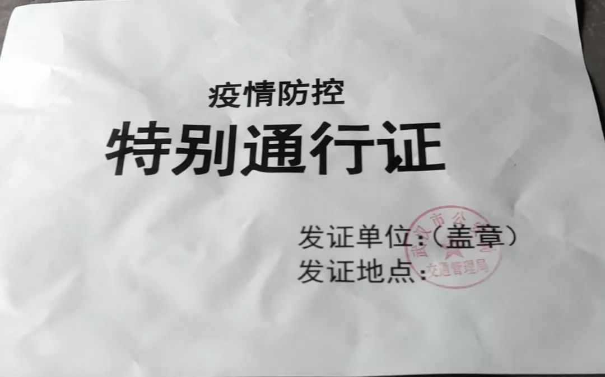

*****
*****到边界拿货，货车司机组队……医疗物资如何打通武汉城
原文链接 备份链接 *************▲************* 大批量新国标标准的口罩正进入嘉兴“心脏仓” 。 （新华社/阿里巴巴供图/图） 全文共*4420*字，阅读大约需要*10*分钟。 “缺口以万为单位”，武汉市汉口医 …
***** *****
*****
*****白天，肖昌文群里的400多名司机开始轮番拨打三位警官的电话，表达支援一线的想法、申请特别通行证。**********当天晚上，肖昌文终于拿到了两张“疫情防控特别通行证”。**********肖昌文把其中一张贴在车窗上，很管用，桥头、隧道口、高速路口的交警看到，便会撤掉路障放行。*****

1月27日上午，陈亮组织的志愿者团队正在搬运捐赠给医院的方便面。 受访者供图
文 | 新京报记者 李桂 庞礴 海阳 李英强
编辑｜滑璇 校对 | 李世辉
►本文约5622字，阅读全文约需11分钟
1月26日，离汉通道关闭的第三天，包括湖北省第三人民医院、武汉大学人民医院、武汉黄陂区人民医院等在内的25家大医院已先后发布求助信息，称护目镜、口罩、外科口罩、医用帽、防护服、手术衣等耗材告急，有些医院的物资储备只够维持3-5天。
同样发布求助信息的，还有全国各地捐赠医疗物资的爱心人士、帮忙对接信息的志愿者、愿意提供运送支持的货车司机：1月25日，3万套防护服在武汉蔡甸区，需要大量车辆和司机分发至医院；1月25日晚间，深圳有大批物资滞留，包括500箱口罩、消毒水和防护服等……
如何对接医院和司机、让这些捐赠的医疗物资流通顺畅，成为供需双方亟待解决的问题。

志愿者们正在搬运物资。 受访者供图
为此，1月24日，湖北省公安厅下发紧急通知，要求各地公安机关密切配合，全力做好运输支持保障工作。通知要求，省内各级、各地公安机关按照省委省政府、省疫情防控指挥部统一部署，建立应急物资运输保障机制，专人对接协调。此外，湖北省公安厅还建立了省市应急物资和专业技术人员联动保障机制；武汉进出城道路，除运输活禽货车禁止通行外，其他货车允许通行。
春节假期的招募
******* *******
*******
40岁出头的肖昌文是武汉市江岸区的一名货车司机，有一辆4.2米长的厢式货车以及一腔热情，“在湖北货车司机圈子里，有人不知道肖昌文，但没人不知道我的网名肖十一郎。”
自1月23日离汉通道关闭始，武汉各家医院陆续发布求助信息，其中不少是希望招募货车司机运送物资。这些信息如潮水般覆盖了肖昌文的微信群、朋友圈，他知道，春节是货车司机们为数不多的假期，许多人和他一样还在休息。
缺司机的问题，在春节临近时已经开始。
1月25日，新京报记者致电十余家分布在武汉各区的货运站，几乎全部处于停业状态，货车司机均在家休假，要到农历正月初七、初八左右才会上班。一名离汉返乡的货运站老板表示，春节期间，物流需求没那么旺盛，所以许多公司暂时停业。“这段时间，武汉没有司机也暂时不会出现问题。要到正月初七、初八，居民的年货储备耗得差不多了，各公司机构正常运转，仓库的储备才显出不足。”
而新型肺炎疫情的来临，无疑增加了货车司机的缺口。1月25日，一名从武汉返回十堰市过年的货车司机告诉新京报记者，由于离汉通道关闭，货运站不知何时恢复营业，所以自己“暂时不会回去”。
本地货车司机大多与普通市民一样，在家闭门不出。一名武汉的货车司机说，他从1月23日后再未出门，最大活动半径是在小区内散步。
就在各种捐赠物资难以抵达武汉时，肖昌文接到了武汉市江岸区交通运输局运管科科长唐某的电话。那是1月23日，唐某希望肖昌文帮忙组织一支货车司机志愿者队伍，协助武汉市红十字会运送医疗用品等各类物资。
之所以找到肖昌文，是因为他是微信群“湖北省个体货运协会”的群主，群里400多名成员都是湖北省内的货车司机。

1月27日，肖昌文把车停靠在武汉市红十字会门前。受访者供图
早在唐科长找到肖昌文前，各种物资求助、司机招募的消息就在群里出现过，大家纷纷表示愿意响应。但那时，湖北省13个地级市的离城通道均已关闭，高速公路也设了路障，国道、省道和乡县道路中不少堵了土方，无法行车，所以武汉市外的司机们爱莫能助。
到了1月24日，向肖昌文表示可以提供帮助的司机，只有武汉市内的十余人。“开始十多个人跟我说可以，最后确认能来的只有4个人。”志愿者司机文成说，每次出任务，司机都要面对家人的阻拦，“但是作为武汉人，武汉有难，怎么能不救呢？”
从后方协调到红十字会通行证
******************
1月24日晚上10点多，肖昌文从武汉市红十字会接到任务：他要带着两辆货车到100多公里外的咸宁市取口罩。
那天是大年三十，肖昌文接到任务时，春晚刚演了一半，他自己也喝了酒。他在群里迅速召集可以即刻前往咸宁的司机和车辆，一个多小时后，终于找齐了符合资质的两名司机、两辆车。
新年钟声响起前，肖昌文戴上口罩走出家门，步行至两公里外的路口，一辆应约而来的货车已在路边等待。他坐进副驾，发现整条路上一辆车都没有，“当时不觉得紧张，就觉得很兴奋。”
但车子驶上武昌高架桥时被交警拦下了。在高速路入口处的路障前，肖昌文拨通了江岸区交通运输局唐科长的电话。唐科长说，为防止疫情扩散，出城车辆必须有通行证，但他也不知道申请通行证要上报到哪一级，只能努力帮忙在后方协调。
一个多小时后，肖昌文收到了放行指令，交警搬开路障，两辆货车离开武汉，奔向咸宁。
但肖昌文明白，这种出发后再找人疏通的办法不是长久之计。1月25日下午，他开始向武汉市红十字会求助，终于拿到了两张为外地捐赠物资车辆开出的“专用通行证”。那是一张A4纸大小的通行证，上面标明了车牌号、物资捐赠单位、随车人数，下面有武汉市红十字会的红章以及签发人姓名、联系方式。
1月25日晚间，武汉市红十字会的工作人员告诉新京报记者，为武汉市红十字会运送物资的汉内、汉外车辆，基本都能拿到这样的通行证，以保证他们出城。

武汉市红十字会签发的“专用通行证”。受访者供图
中国生物多样性保护与绿色发展基金会志愿者田曦，也拿到了和肖昌文一样的武汉市红十字会“专用通行证”。
田曦的目标，是到湖北省孝感市孝昌县接收一批口罩，再送进武汉。这批口罩是由绿发会志愿者从江苏运到孝昌的，一共6万个。
1月26日凌晨0点40分，田曦向孝感的应城市人民医院借了一辆救护车，和司机一起从应城出发，到达武汉时已是凌晨3点多。6万个口罩被分成两批——一半被近分配给几家医院，另一半被送到武汉市红十字会。
靠着这张通行证，1月26日早上7点多，田曦和救护车顺利离汉。
“疫情防控特别通行证”
******************
据新华社报道，自1月24日起，湖北省交通运输厅对运送医疗救援物资、运送群众生活物资、运送保障城市运行的水电气等相关物资的三类车辆高速放行，同时与公安交管部门联合开辟“绿色通道”，确保运送防控物资的车辆畅通无阻。
各交通大队执勤民警现场查验后，凡是进城为武汉市供应医疗器械、药品类物资、生活必需品（活禽除外）、建筑材料等的货运车辆，一车一证，发放特别通行证并放行；出城货运车辆，现场回收盖章特别通行证，驾驶员及乘车人员无发热症状的，予以放行。
上文所说的特别通行证，全称“疫情防控特别通行证”，由武汉市交通管理局签发。虽然绿色通道已经开辟，但对货车司机来说，要想拿到这张通行证并不容易。
1月25日，多名与肖昌文合作的志愿者司机按照武汉市新型肺炎防控指挥部的公告，给负责捐赠物资通行保障的三位警官打电话，希望可以拿到“疫情防控特别通行证”。但电话常常占线，基本打不通，文成好不容易通过了一次，但警官在电话里表示，自己也无法为车队的司机们办理通行证，“解决不了”。
1月26日白天，肖昌文群里的400多名司机开始轮番拨打三位警官的电话，表达支援一线的想法、申请特别通行证。当天晚上，肖昌文终于拿到了两张“疫情防控特别通行证”，同样是A4纸大小，背面写有使用规则：仅限防疫期间使用，公安交管部门盖章后有效。

武汉市交通管理局签发的“疫情防护特别通行证”。受访者供图
肖昌文把一张“疫情防控特别通行证”贴在车窗上，很管用，桥头、隧道口、高速路口的交警看到，便会撤掉路障放行。剩下的几张通行证被他放在车里，以备其他车辆需要。
1月26日，肖昌文带着红十字会的“专用通行证”、交管局的“疫情防控特别通行证”奔波于武汉天河国际机场、武汉市红十字会与武汉市内的两家医院之间。他要把刚刚落地的医疗物资运往红十字会，并分发至这两家医院。以往熟悉的道路，这几天变得空空荡荡，餐馆全部店门紧闭。早上出门时，肖昌文带了两包方便面、一瓶矿泉水，但水到下午就喝光了，没处买。方便面也没法泡，等在机场时，他拆开包装迅速啃了几口。
转运完物资回到家中，已是1月27日凌晨4点多。已过不惑之年的肖昌文十分疲惫，妻子披上衣服为他热了一碗汤。第二天早上9点钟，他再次整装出发。
闸口交接
******************
1月26日早上8点多，武汉市内某网约车公司的陈亮到武汉市武东收费站接收物资。那是一批从上海运来的医疗用品，总计10万件口罩和防护服。
陈亮是这家网约车公司的投资监管部部长，疫情爆发后，他依托公司平台，又经过朋友圈发布，组织起了一支拥有600余辆汽车志愿者的队伍。既有小轿车，也有货车，司机遍布各地。
上海的司机开了一辆厢式货车，临近武汉时不愿进城。司机表示，如果他的车子开进武汉，返沪后要接受非常严格的检查，人也可能会被隔离。
陈亮很理解，率领20名志愿者开着20辆小车来到武东收费站的路障闸口，“我们的车队基本保持一辆车只配一名司机的状态，不会带另外的人出城，就是一名司机把车开过去取货，然后再把车开回来。”
离汉通道关闭以来，武汉周边就开始出现各种闸口、路障。依据陈亮的观察，闸口一般设在高速公路市与市交界处的收费站；在离汉的省道和国道上，也有检查闸口。
湖北省鄂州市公安局负责协调捐赠物资的张勇（化名）说，执勤民警会在闸口检测车上人员及其体温，包括司机在内，一辆车最多可有两名随车人员。此外，民警还要目测简查验车上装载的物资。“比如是不是有活禽，或者有的货车可能运了‘三无’产品，有的运的不是医疗物资，趁这个时间运其他的东西，所以需要简单甄别一下。”

陈亮组织的志愿者团队正在核对物资数据。受访者供图
1月26日，武东收费站的闸口是由红白相间的路锥设起的路障，收费站与路障间的一段空地属于警戒区域。警戒区域内，由武汉外出的车辆、其他地方的外来车辆均可进入，所以从上海开来的厢式货车、20辆志愿者轿车都开了进来，在这里手工卸货、重新装车。
陈亮说，这批口罩要分别送往武汉市内的14家医院，医院给转运车辆开出了物资证明。比如华中科技大学同济医学院协和医院开具的情况说明写道，“因我院医疗防护物资紧缺，兹有东风出行红旗车队负责运输防护物资，希望临卡点放行，予以通过。特此说明。”落款处还有医院的红色印章。有了这样的证明文件，整个过程没有阻碍。
1月23日离汉通道关闭后，类似的闸口交接已经成为物资入汉的重要方式。
鄂州市公安局的张勇告诉新京报记者，自己就帮忙协调过这样的事，当时一支车队要将医疗物品从南京送至武汉，但在进入武汉的闸口处就停住了。“南京那边跟物资接收单位联系好，然后等在闸口那里，接收单位安排的车再从闸口那儿把东西运进去。”利用这种方式，外地的车辆不用进城，武汉的车辆也不用出城。
用医院证明文件出入闸口
******************
作为一名想要捐赠口罩的“热心群众”，刘倩倩（化名）的亲身感受是：自1月26日起，即便没有“疫情防控特别通行证”、红十字会的“专用通行证”，运送物资的货车也能出入武汉闸口。
刘倩倩是一名“90后”，在武汉读过4年大学。疫情发生后，她和朋友找到共9万个口罩，向湖北省慈善总会表达了捐赠意愿。按照慈善总会的分配，这批口罩将捐赠给咸宁市嘉鱼县人民医院和武汉市内的医院。1月23日离汉通道关闭前，2万个口罩被顺利送往嘉鱼。
那之后，刘倩倩又在互联网上看到了孝感市第一人民医院（下称“孝感一院”）的求助信息，彼时她手上还有7万个口罩，她决定将7万个口罩分成三份：5万个送到嘉鱼县人民医院，1万个送往孝感一院，其余1万个送到武汉市内的各医院。
按照计划，1月25日，刘倩倩会将6万个口罩从武汉市新洲区工厂运到孝感一院、嘉鱼县人民医院。她找到了货车司机，但司机担心货车出不了城。“我们后来打电话问了公安机关，确实出不了城。”刘倩倩说。
刘倩倩于是拨通了武汉市公安机关公布的24小时“接受运送防控物资车辆求助咨询服务热线”，工作人员表示，他们只能协调市内交通运输，出了市区“问题解决不了”。市长热线也说，运送口罩的行车路线如果离开武汉，需找湖北省交管局协调。可湖北省交管局的电话一直打不进去。
协调之下，孝感一院决定安排车辆到武汉取口罩。1月26日，孝感一院的司机带着医院开具的加盖了公章的“红头文件”顺利入汉，取走口罩后又顺利离开。

武汉市汉口医院为陈亮出具的证明文件。受访者供图
“现在的情况是，只要医院能开证明就都可以走，而且不一定要医院出车。”刘倩倩解释道，文件上必须有司机的姓名、身份证号、车牌号等，还要加盖医院的公章，“这几个东西齐全的话，就可以上路了。”
1月27日晚间，“接受运送防控物资车辆求助咨询服务热线”的工作人员告诉新京报记者，进入武汉市运送物资的货车确实可以凭接收物资的医院开具的证明文件离开武汉。
最近几天，肖昌文忙得不行，400余人的“湖北省个体货运协会”群内，仍不断有志愿者接力报名。在货车司机们组成的微信群里，目前已有67名司机留下了自己的车牌号、车型、联系方式，表示24小时待命，听从调遣。
陈亮也要照顾好自己的志愿者团队，为司机们协调通行证、行车路线、与医院对接等问题，还要确保车辆消毒、司机拥有防护物资等。“有些司机还是很害怕的，很有压力。”陈亮说。
也有一些事情让陈亮感动。1月26日晚上7点多，陈亮刚吃上饭，一个电话打了进来了。对方称是某食品企业的工作人员，希望向各医院捐助4000箱方便面、4000箱矿泉水，“他说东西在武汉市蔡甸工业园，但工人放假了，现在没车，希望我们帮忙运送。”
这意味着，1月27日至少需要200辆车从武汉各地赶到蔡甸。
1月27日中午1点半，陈亮给新京报记者发来一段视频，视频中，戴着蓝色一次性口罩的工作人员正在往一辆卡车的后备箱上货。车厢内放着的，则是已经堆好的矿泉水和方便面。
*洋葱话题*
*▼*
*你身边有支援武汉的人吗？*
*后台回复关键词*****“洋葱君” ，加入读者群****
***推荐阅读***

卫健委专家曾光：关闭离汉通道为专家组意见，绝对正确

小汤山医院设计师：没想到图纸再用，希望武汉新医院效果更好

*********既然在看，就点一下吧****** *********
*********
原文链接 备份链接 *************▲************* 大批量新国标标准的口罩正进入嘉兴“心脏仓” 。 （新华社/阿里巴巴供图/图） 全文共*4420*字，阅读大约需要*10*分钟。 “缺口以万为单位”，武汉市汉口医 …
原文链接 备份链接 医疗防护资源不足是常态，各地资源调配需平衡，“灯下黑”区域渐次光亮，但少数地区的疫情宣传依旧不到位 外地务工返乡者最担忧的问题是年后经济收入断流、地域歧视，担心节后可能无法返工 本文首发于南方人物周刊 文 | 本刊记 …
原文链接 备份链接 17 年前的那场公共卫生危机，未能及时公开疫情成为事后被诟病最多的问题之一，也成为中国疾病防控系统以及政府信息公开等许多方面的重要转折点。 而多年后，越来越多的互联网官方渠道成为了重大事件的定海神针，「官宣」被普遍接 …
原文链接 备份链接 以下文章来源于南方都市报 ，作者南方都市报 25日，武汉封城进入第三日。据不完全统计，湖北至少18个城市（县）已采取出入管控、限制市内交通等封城措施。 新型冠状病毒感染确诊速度迅速提高，近四日的新增病例从149人跃增 …
原文链接 备份链接 特约撰稿 李梦琪 本报记者 郭阳琛 石英婧 上海报道 “我比很多同事都幸运，除夕是在家过的。”已经在抗击疫情一线连续奋战了二十多天，除夕夜能和家人在一起度过让武汉市肺科医院隔离病区护士吴青（化名）格外欣慰。 由于武汉疫 …